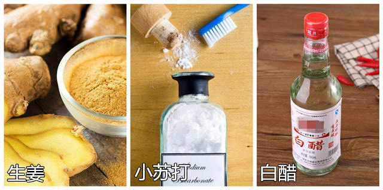
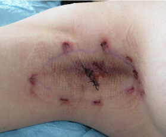
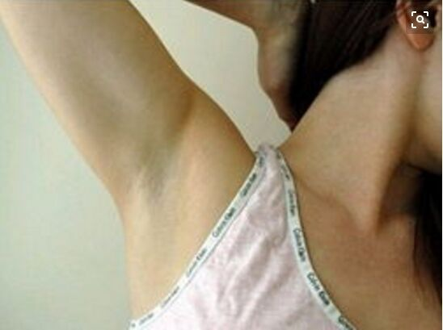

在腋下臭这个问题上。我花了足足十年的时间尝试了上百种所谓的去腋下臭方法， 无一例外都以失败告终，才明白一个道理：想真正去腋下臭，就得找对方法！想知道我是如何成功去腋下臭的，可以抢先加狐消消的微信,一对一的帮你找到有效的去腋下臭方法！加狐消消的微信，查看朋友圈海量成功案例！
我是初中开始有腋下臭的，那会每年一到夏天全班都穿短袖校服，就我还穿着长袖的，然后越捂越热，流汗多了人也变得更臭。班上的 同学个个见到我都绕道走，我同桌更是宁愿被老师罚站在教室后面的垃圾桶旁边，也不肯跟我坐一桌！让我特别难过、尴尬！
我爸妈对腋下臭认识不多，更不会帮我找，只告诉我如果觉得臭就多洗澡，可我一天洗4次澡也没用，腋下臭还是越来越严重。原本是流汗才有臭味，后来流汗不仅有臭味，腋下还会有又黏又臭的黄色粘液。我有好多心爱的衣服，腋下的位置都被染成黄色的， 洗也洗不掉！
最让人恶心的是，
耳朵里能掏出一大坨又臭又油的耳垢，那阵子我几乎天天做噩梦，梦见耳朵里爬出臭虫。
从那以后我开始重视腋下臭，跑去图书馆借各种书回家看，照着里边的方法做。

我试过白醋去腋下臭，用了一个月，整个人像行走的酸菜，酸臭酸臭的，腋下臭没去成，皮肤严重过敏。
好多书上介绍的生姜去腋下臭我也试过了，用生姜片擦腋下，皮肤火辣辣的，像被灼伤一样 疼了好几天，但流汗照样有腋下臭。
最坑人就是小苏打去腋下臭！苏打粉把腋下的毛孔都堵死了，用水清洗，越洗堵得越厉害，最后皮肤发炎瘙痒，害得我要去美容院请专人帮我清洁，美容师边洗边感慨：现在的年轻人做事不经脑子……尴尬得我想找条缝钻进去… …
后来学会在某宝上购物，我买了非常多去腋下臭的产品，什么半x清、舒x阁、清爽露、止汗散，别人夸得天花乱坠，可用到我身上就是 一点效果都没有，钱花出去了，流汗的时候还是照样发臭，把我给郁闷坏了！
实在“走投无路”之下，我跑去做了去切除了大汗腺！
↓做完以后是这个样子！

我花了7000多块去切除了大汗腺，那个疼真钻心。还傻傻的以为虽然疼，但终于雨过天晴了，再也不用遮遮掩掩了，谁知道没过6个月 ，我发现自己身上那该死的气味又出现了，并且越来越严重！我简直想爆粗口！7000多块啊，竟然反弹了，就这么打了水漂！腋下还留了一个疤痕。
千万别学我这样盲目去腋下臭，找到适合自己的方法才能真正解决腋下臭问题。如果你不知道什么方法适合自己，建议找狐消消咨询。
(微信扫描上方二维码，领取腋下臭秘笈一份)
这次失败对我的打击太大了，我深深怀疑这个世界上没有能去腋下臭的方法！没想到在一次聚会上，我同学跑来问我腋下臭的情况，看我 默不作声，她就什么也没说，直接拿出手机在微信里推荐了个人给我，她跟我解释说，大学的时候突然有腋下臭，就是在这位狐消消的帮助下才快速成功 解决腋下臭的。
我同学得到指导后，花了两个月的时间，成功去掉腋下臭，现在过去三年多，没有复发的迹象！
因为实在太好奇狐消消是怎么帮人去腋下臭的，我加了她的微信。看她的朋友圈分享了好多去腋下臭的成功案例，越看越激动，重燃斗志 。
狐消消了解了我的情况，我过往的去腋下臭经历之后，帮我定制了去腋下臭的方案。按照狐消消的指示，我只花了两个月的时间，腋下臭就彻底消失了。

用狐消消的方案一周左右，出汗量变少，流汗的时候也闻不到臭味。用完一个周期，腋下没有黄色分泌物，一整天都是干净舒爽的，衣服再也没有出现过黄色汗渍。用完两个周期，耳垢从油腻块状变成干爽的粉末状！停用 到现在快两年了，今年整个夏天，我没有做任何干预，流汗特别严重的时候也没闻到过臭味！
在狐消消的帮助下，用对方法，去腋下臭就是这么简单，只花两个月的时间，就解决了我过去十年都解决不了的腋下臭问题！如果你也想尽快摆脱腋下臭困扰，建议可以加下狐消消的微信，去咨询一下。
打开微信扫一扫，添加狐消消好友
感谢读这篇文章的大家，耐着性子看完了我的去腋下臭经历，我希望我的经验可以给同样有腋下臭烦恼的朋友们提供一些实用的帮助，如果你想具体了解，可以直接用微信扫描上方的二维码添加狐消消为好友，她的朋友圈里，有海量成功去腋下臭的案例，有视频有照片，男的女的，20岁-60岁的都有，还有不少腋下臭的小知识呢,相信一定可以帮助到大家！
相关搜索

最新评论
346
蓝色梦幻
340
冷酷的云
333
颓废囧妳
330
招招招财羊
288
一条寂寞的鱼
273
花开无声
这个我就不知道了，你可以加狐消消祛臭的微信号，在微信上面把你的情况跟她说下，具体我也不太清楚。
261
蓝色梦幻
252
大皇后
248
冰咖啡的主旋律
应该的，希望您能早生贵子。
247
小样·听话
239
言己
232
玛尼玛尼哄
229
月上新楼
我也是希望能帮助到和我一样受腋下臭困扰的人！
212
让爱继续
182
太阳也冷
179
匆匆那年
168
andme
156
浮殇年華
147
陈小白
恩，有时候我们自己都受不了那股味，何况别人呢？
146
逆水
138
累@
亲爱的，我现在用完了，想买的话就加一下狐消消祛臭的微信号吧
135
最爱还是你i
同是天涯沦落人呀
129
忘了他
嗯嗯，也祝你早日康复，清清爽爽香香的！
216
石头队长再见了
116
摇了摇头丶
是保密配送的，我当时是让他寄到我公司的，包裹上看不出来是什么的，你加她微信问下
114
傻蛋也有爱情
104
焚心劫
100
爱你心口难开
95
莫名的青春
你加下狐消消祛臭的微信，直接扫描右边的二维码就可以了，我当时就是在微信上买的，直接微信咨询并付款，很方便的。
86
姐的拽、你不懂
你的腋下臭好了没啊，告诉下我
84
这样就好丶
完全好了！用了狐消消祛臭的方法两个多月就好了！
75
怀念·最初
很有效果，我给我女儿用了三次已经没有味道了，孩子才11岁，太小了，不敢用其它的东西。选择了狐消消祛臭很幸运！
66
爱没有所谓亏欠
65
婞褔ｖīｐ